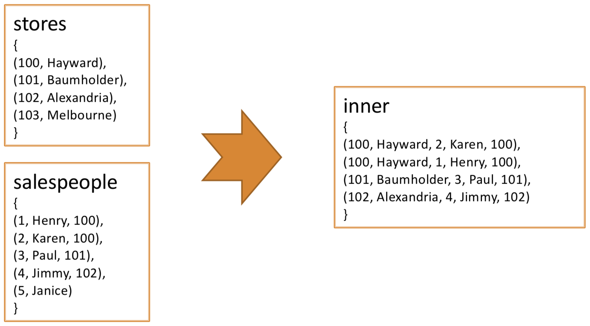
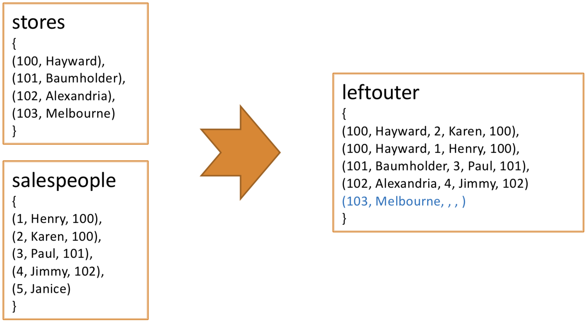
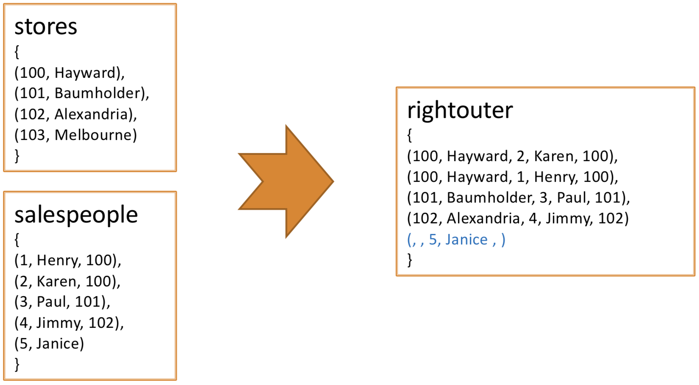
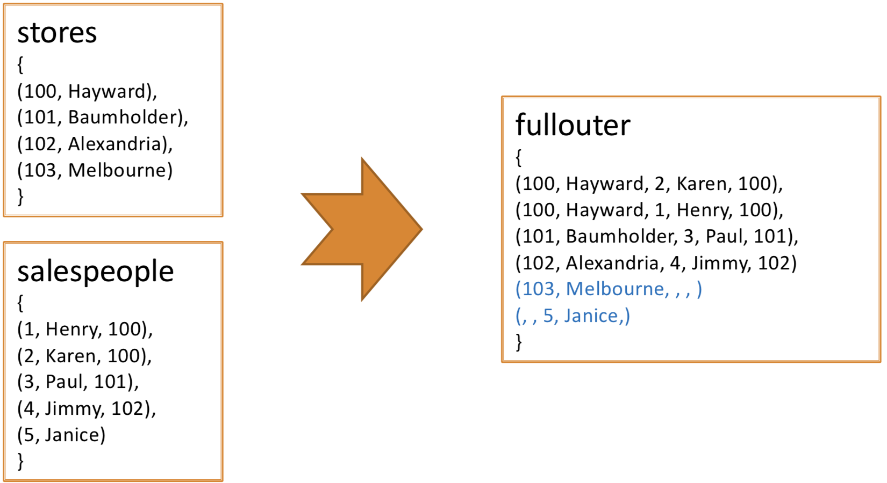

A = load 'NYSE_dividends' (exchange, symbol, date, dividends); B = filter A by dividends > 0; C = foreach B generate UPPER(symbol);
A = load 'foo'; -- this is a single-line comment /* This is a multiline comment. */
divs = load '/data/examples/file';
divs = load '/data/examples/file' using HBaseStorage(,);
divs = load '/data/examples/file' as (exchange: int, symbol: chararray);
store processed into '/data/examples/processed';
dump processed;
A = load 'input' as (user:chararray, id:long, address:chararray, phone:chararray, preferences:map[]); B = foreach A generate user, id;
prices = load 'NYSE_daily' as (exchange, symbol, date, open, high, low, close,
volume, adj_close);
gain = foreach prices generate close - open;
gain2 = foreach prices generate $6 - $3;
prices = load 'NYSE_daily' as (exchange, symbol, date, open, high, low,
close, volume, adj_close);
beginning = foreach prices generate ..open;
-- produces exchange, symbol, date, open
middle = foreach prices generate open..close;
-- produces open, high, low, close
end = foreach prices generate volume..;
-- produces volume, adj_close
all_in_one = foreach prices generate *;
-- produces a tuple of all fields
bball = load 'baseball' as (name:chararray, team:chararray,
position:bag{t:(p:chararray)}, bat:map[]);
bball_avg = foreach bball generate bat#'batting_average';
bball_p = foreach bball generate position.p;
divs = load 'NYSE_dividends' as (exchange:chararray, symbol:chararray,
date:chararray, dividends:float);
startswithcm = filter divs by symbol matches 'CM.*';
-- Only records matching the pattern 'CM.*' are retained
daily = load 'NYSE_daily' as (exchange:chararray, stock_id:int);
grpd = group daily by stock_id;
describe grpd;
grpd: {group: (stock_id: int), daily: {exchange: chararray,stock_id: int}}
daily = load 'NYSE_daily' as (exchange, stock, date, dividends);
grpd = group daily by (exchange, stock);
avg = foreach grpd generate group, AVG(daily.dividends);
describe grpd;
grpd: {group: (exchange: bytearray,stock: bytearray),daily: {exchange: bytearray,
stock: bytearray,
date: bytearray,
dividends: bytearray}}
daily = load 'NYSE_daily' as (exchange, stock); grpd = group daily all; --grpd will have only one row containing all records
daily = load 'NYSE_daily' as (exchange:chararray, symbol:chararray, date:chararray, open:float); byclose = order daily by close desc, open; dump byclose; -- first close in descending order, then open sorted in ascending order
daily = load 'NYSE_daily' as (exchange:chararray, symbol:chararray); uniq = distinct daily;
inner = JOIN stores BY storied, salespeople BY storeid;

leftouter = JOIN stores BY storied LEFT OUTER, salespeople BY storeid;

rightouter = JOIN stores BY storied RIGHT OUTER, salespeople BY storeid;

fullouter = JOIN stores BY storied FULL OUTER, salespeople BY storeid;

divs = load 'NYSE_dividends'; first10 = limit divs 10;
divs = load 'NYSE_dividends'; some = sample divs 0.1;